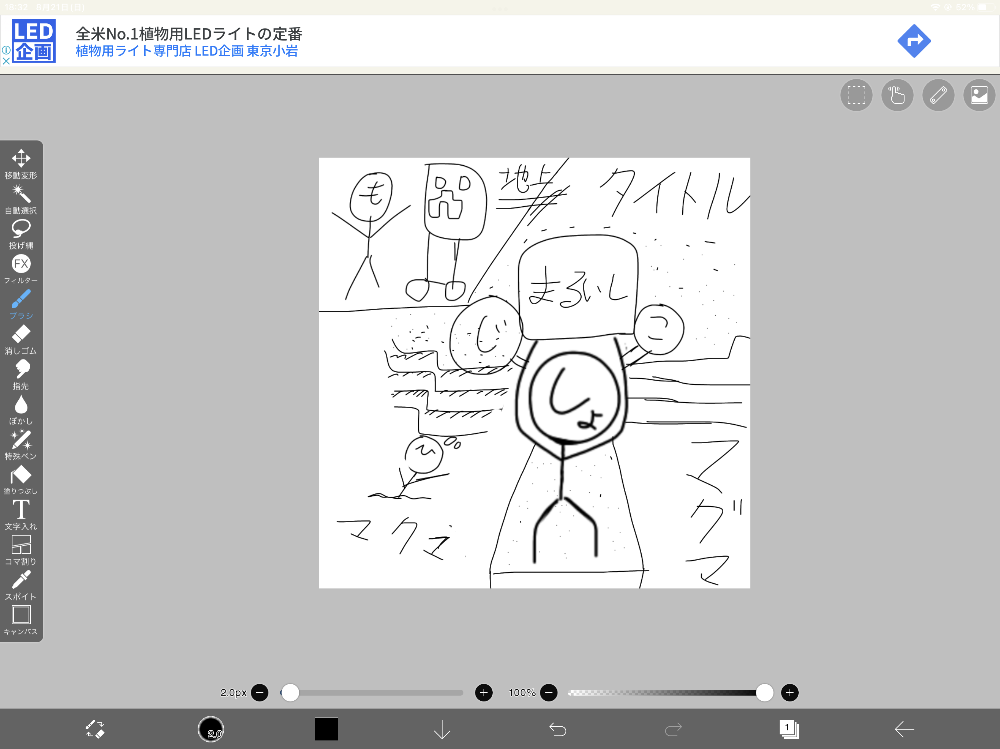
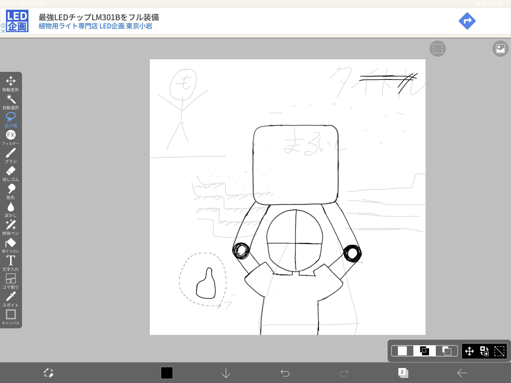
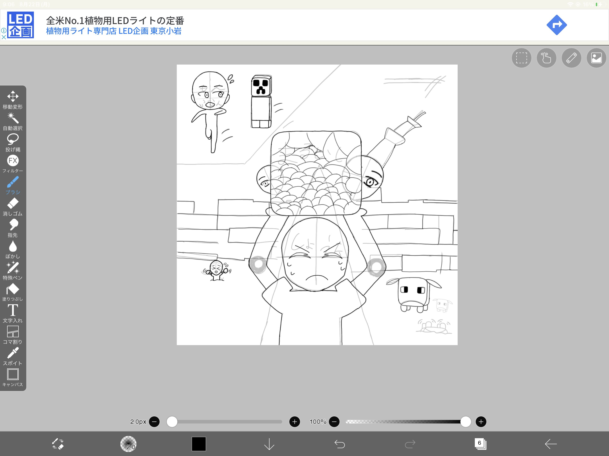
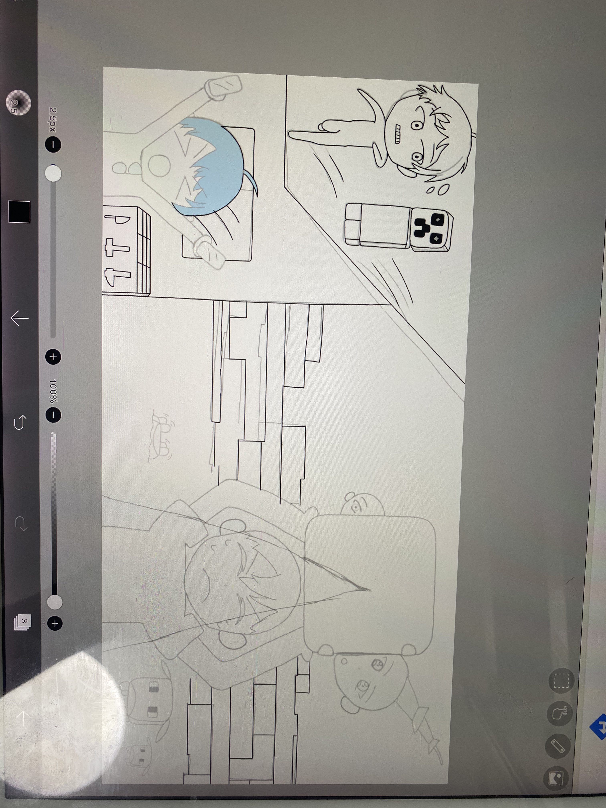
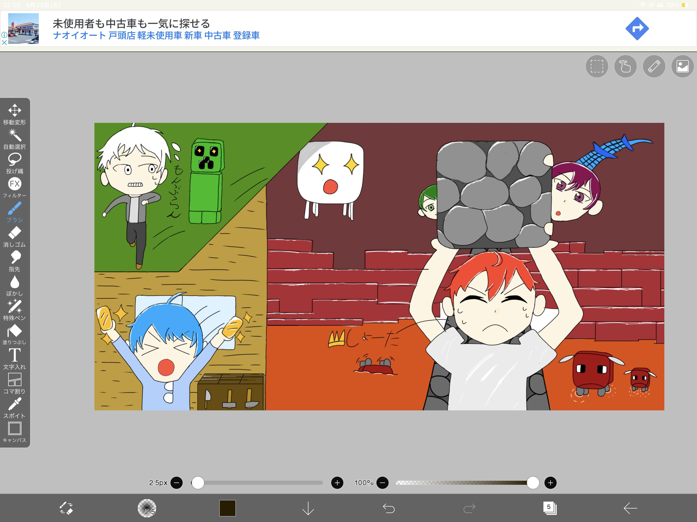
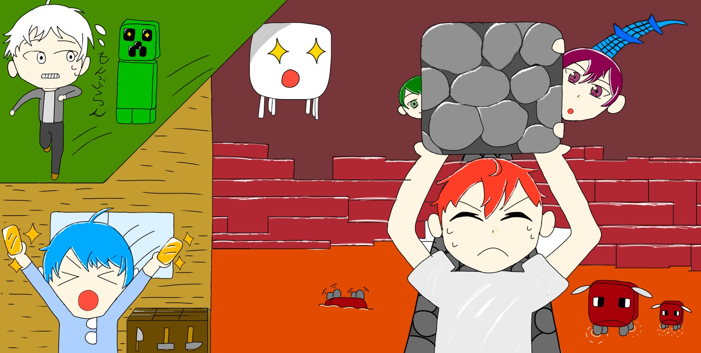

企画出しをDiscordの#企画案チャンネルにそれぞれのメンバーが思いついたときに書き込みます。また、まれに企画会議のようなものをすることもあります。
メンバーが集まったときにしょうたが#企画案チャンネルに投稿された企画から企画を選びます。選ぶとは言っても、ガチで無理そうで没になるもの以外はほとんど全部の企画を撮影しています。およそ1つの動画の撮影時間は30分ほどです。
それぞれの撮影した動画ファイルを編集者にギガファイル便で送ります。編集者はほぼしょうたで、他の人の余裕があるときにしょうたが割り当てるということが多いです。
編集者はカット・拡大・テロップ・BGM・効果音などの演出を入れます。
動画編集が終わったらしょうたにその動画が送られます。その動画はしょうたが見て、間違いがあったら修正したりします。
ジョニーズのサムネイルには大きく二つあり、一つは動画の一部の画像に文字や集中線、矢印などを入れるものと、イラストのものがあります。前者のサムネイルは、しょうたが動画の一部で映えそうなところを選びそこにいい感じの文字をでっかく入れて、集中線を入れます。
後者のイラストのサムネイルは主にひさとが描いています。イラストのサムネイルができるまでの写真があるのでご覧ください。
     気になるタイトルとYoutubeのアルゴリズムに配慮した概要欄を書き、17～18時くらいに上げます。(視聴者が多くなるのが18時～だから。)
もし再生回数が普段より悪ければサムネイルとタイトルを変えます。これをアップロードから1時間置きに3回くらいやります。